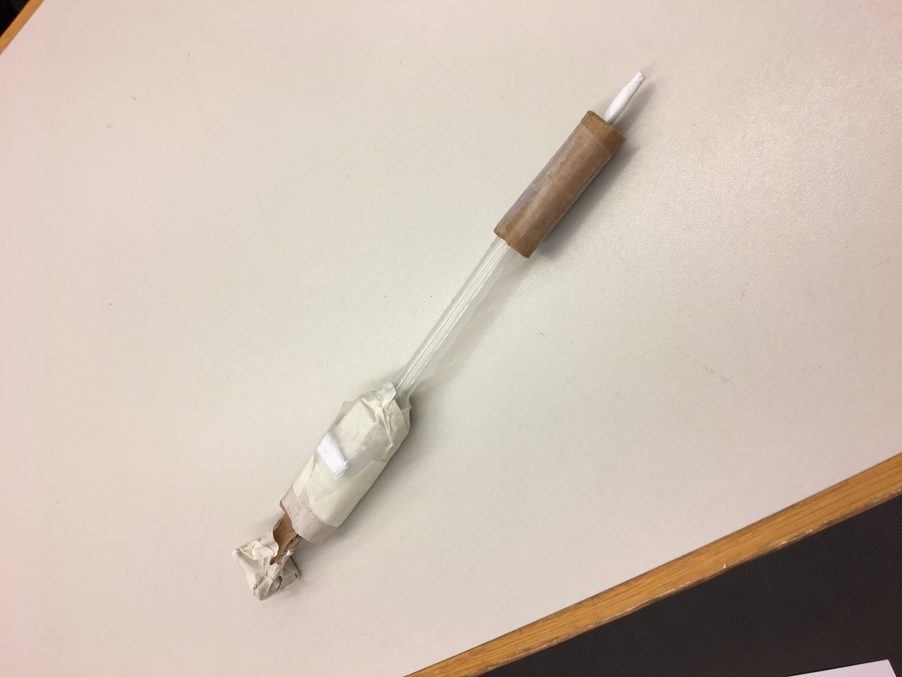

Design Thinking
Our Solution
There is a 3-shot vaccine. Since 2001 more than 150,000 people were given unsafe injections. It is said that more than 5% of clinicians don’t follow standard protocol when administering injections. Our prototype works as a cheap and efficient way to provide vaccines to many people in low income communities. It reduces the risk of contamination from non sterile needles. In turn it’ll reduce the prevalence of the spread of diseases such as HIV, Syphilis, It’ll be stored in a refrigerator at -30 degrees celcius to keep from contamination There will e specific medical personnel with specific training who will handle the usage and distribution of the needle and vaccines.